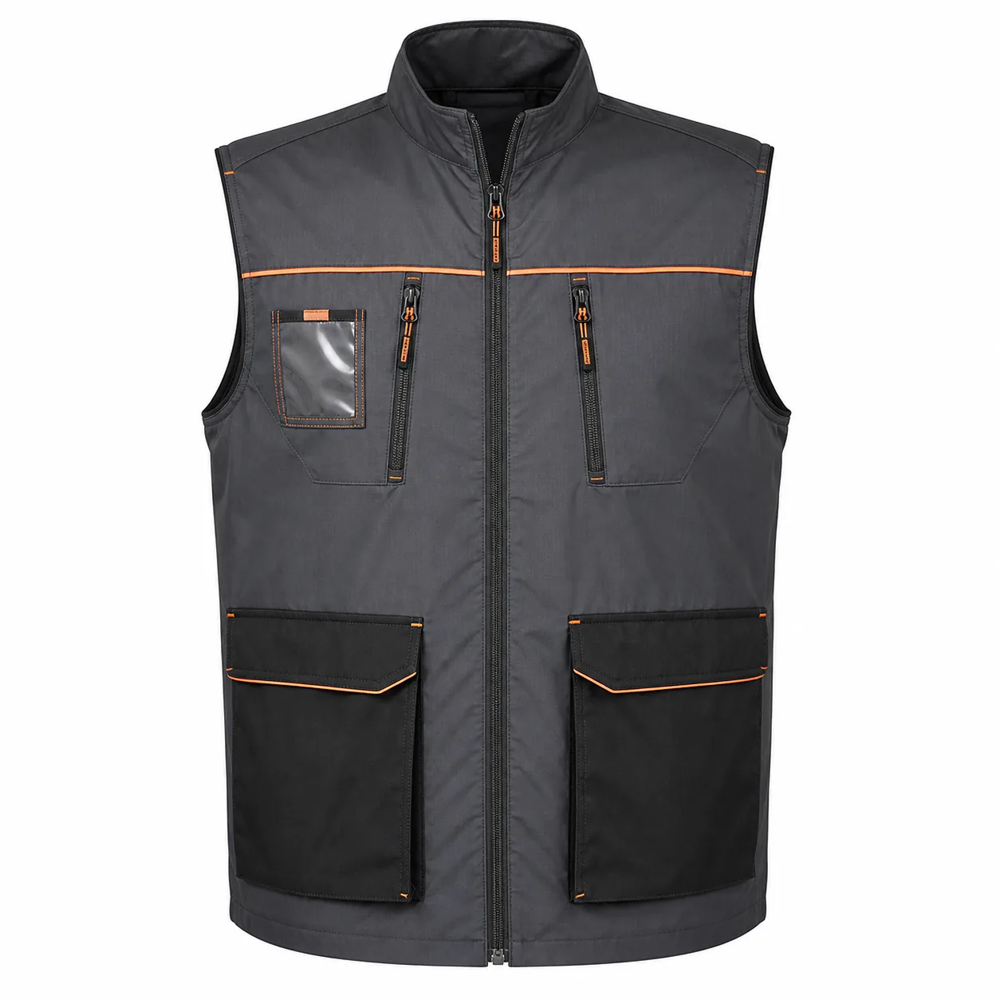

Kumaş
Hafif, iç dolgusuz ve göreve uygun dokuma kumaş
İç dolgusuz yazlık işçi yeleği üretimi: hafif kumaş, çoklu cep, kurumsal renk ve logo seçenekleri. Minimum 50 adet için teklif alın.

Yazlık işçi yeleği, sıcak iç ortamda veya yaz dönemindeki saha görevlerinde kol hareketini serbest bırakırken küçük ekipmanların düzenli taşınmasını sağlar. İç dolgusuz yapı, yeleğin gereksiz ısı ve hacim oluşturmadan tişört üzerinde kullanılmasına yardımcı olur.
Cep sayısı kadar ceplerin boyutu, kapama biçimi ve görev sırasında erişilebilirliği önemlidir. Kalem, kimlik, telefon ve el aleti için ayrılan bölmeler yükü dengeli dağıtmalı; omuz ve kol evi çalışanı rahatsız etmemelidir.
Üretim hattında sade kapaklı cepler, bakım ekibinde fermuarlı güvenli bölmeler, depoda kimlik cebi ve montajda alet askıları öne çıkabilir. Kumaş gramajı vardiya sıcaklığı ve sürtünme düzeyine göre seçilir.
Kurumsal renkler omuz, cep kapağı ve biye parçalarında uygulanabilir. Logo konumu cebin çalışmasını engellemeyecek biçimde numunede belirlenir.
Yazlık İşçi Yeleği satın alımında teknik şartname hazırlanırken şu malzeme çerçevesi açıkça yazılmalıdır: Hafif, iç dolgusuz ve göreve uygun dokuma kumaş. Bunun yanında cep ağızları, omuz ve fermuar hattında kullanıma uygun sağlam dikiş ölçülebilir bir kabul noktası olarak numunede incelenir. Beden dağılımı yalnız çalışan sayısından çıkarılmaz; görevin hareket biçimi, ürünün alt veya üst katmanla giyilmesi ve vardiya boyunca ihtiyaç duyulan rahatlık da hesaba katılır. İlk siparişte onaylanan fiziksel numunenin ürün kodu, kumaş referansı, renk tonu ve aksesuar bilgileriyle saklanması; sonraki alımlarda farklı yorumların önüne geçer ve şubeler arasında ortak bir kıyafet standardı kurulmasını kolaylaştırır.
Fabrika, depo, bakım, montaj, lojistik ve saha servis ekipleri için hazırlanan yazlık işçi yeleği projelerinde kalite kontrol yalnız son görünüşe bırakılmaz. sıcak ortam, ekipman taşıma ve sık giyip çıkarmaya göre planlama üretim öncesi kararın merkezindedir; kesim ölçüsü, kritik dikişler, logo konumu ve paket içeriği aşamalı olarak takip edilir. Satın alma ekibi adet, çalışan görevleri, teslimat noktaları ve hedef tarihi teklif formunda paylaştığında gereksiz özellikler ayrıştırılabilir, gerekli işlevler ise yazılı kapsama alınabilir. Böylece tekliflerin aynı teknik temel üzerinden karşılaştırılması, beden değişimlerinin yönetilmesi ve yeni personel için devam siparişinin doğru modelden açılması mümkün olur. Üretim çözümü, yalnız ilk teslimatı değil ürünün kurum içindeki kullanım ve yenileme düzenini de destekleyecek biçimde planlanır.
Kesin teknik özellikler kullanım alanı, adet ve onaylanan numuneye göre belirlenir.
Hafif, iç dolgusuz ve göreve uygun dokuma kumaş
Cep ağızları, omuz ve fermuar hattında kullanıma uygun sağlam dikiş
Sıcak ortam, ekipman taşıma ve sık giyip çıkarmaya göre planlama
Göğüs ve sırtta nakış, transfer veya uygun baskı
Logo ve kumaş yüzeyine göre DTF, transfer veya serigrafi değerlendirmesi
Kurumsal kartela, garni ve aksesuarlarla proje bazlı renk planı
Fabrika, depo, bakım, montaj, lojistik ve saha servis ekipleri. Her sektörün hareket, bakım, görünürlük ve kurumsal temsil beklentisi ayrı değerlendirilir.
Ürün standardı yazılı bilgi ve numune kararıyla oluşturulur.
Toplu satın alma öncesinde üretim, adet, kumaş ve logo kararları.
Özel üretimde minimum sipariş 50 adettir. Model, kumaş, renk, beden dağılımı ve logo uygulaması toplam proje kapsamında değerlendirilir.
Göğüs ve sırtta nakış, transfer veya uygun baskı. Uygulama yöntemi logo ayrıntısı, kumaş yüzeyi, renk ve bakım koşuluna göre numune aşamasında belirlenir.
Hafif, iç dolgusuz ve göreve uygun dokuma kumaş. Kesin seçim çalışma ortamı, kullanım süresi, hareket yoğunluğu ve bakım düzeni görüldükten sonra yapılır.
Proje kapsamına göre numune planlanabilir. Numunede kalıp, beden, hareket, kumaş, aksesuar ve logo yerleşimi kontrol edilerek seri üretim ayrıntıları yazılı onaya bağlanır.
Kumaş ve aksesuar seçenekleri elverdiğinde kurum renkleri ana yüzey, garni, biye veya tamamlayıcı parçalarda uygulanabilir. Ton kararı fiziksel kartela ya da numune üzerinden doğrulanır.
Yaklaşık adet, görev ve sektör, beden dağılımı, tercih edilen model, renk, logo dosyası, teslimat şehri ve hedef tarih paylaşılırsa yazılı teklif kapsamı daha doğru hazırlanabilir.
Renk, cep ve panel ayrıntıları teklif kapsamında uyarlanabilir.
KT-YL-016 kodlu yeni üretim modelini inceleyin.
Model detayına gidin →KT-YL-017 kodlu yeni üretim modelini inceleyin.
Model detayına gidin →KT-YL-018 kodlu yeni üretim modelini inceleyin.
Model detayına gidin →Birlikte kullanılan ürün gruplarını aynı renk ve logo standardında planlayın.
Kurumsal üretim, kumaş ve logo seçeneklerini inceleyin.
Ürün sayfasına gidin →Kurumsal üretim, kumaş ve logo seçeneklerini inceleyin.
Ürün sayfasına gidin →Kurumsal üretim, kumaş ve logo seçeneklerini inceleyin.
Ürün sayfasına gidin →Kurumsal üretim, kumaş ve logo seçeneklerini inceleyin.
Ürün sayfasına gidin →Lokasyon bazlı planlama, teslimat ve kurumsal iş kıyafeti yaklaşımımızı inceleyin.
Adet, beden dağılımı, logo dosyası ve teslimat hedefinizi paylaşın; yazılı üretim kapsamını oluşturalım.